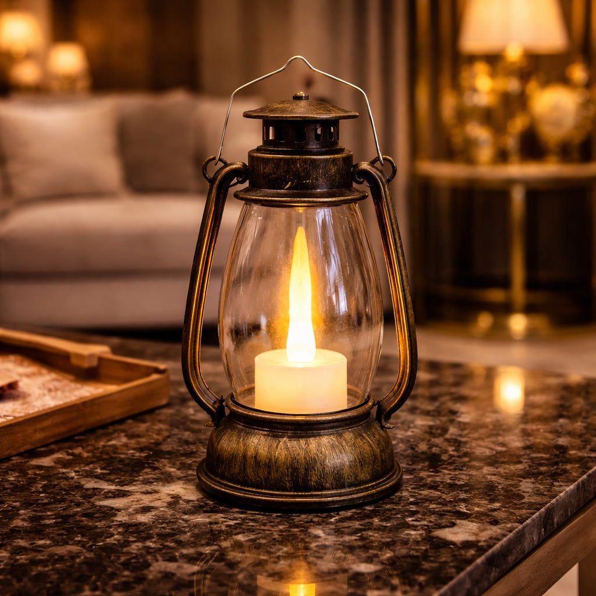
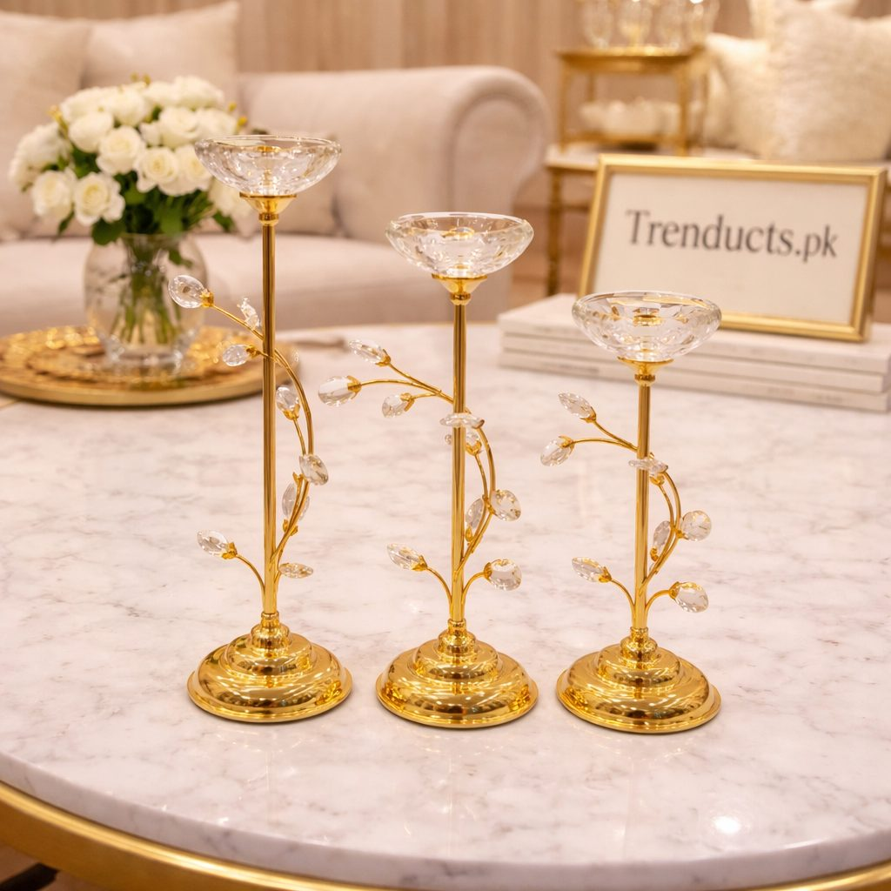
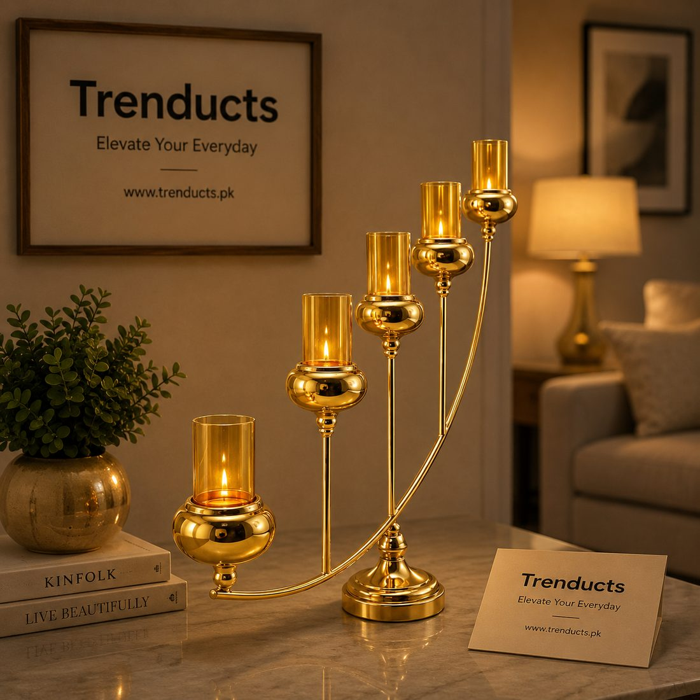

How to set up a candlelit dinner at home in Pakistan for an anniversary, birthday or quiet evening, with table, lighting and menu ideas.



Restaurants in Pakistani cities can be wonderful for a special occasion, but they are also crowded, noisy and often expensive. Many couples find that the most memorable anniversaries are celebrated at home, once the children are asleep or staying at their grandparents', with a home-cooked meal and soft candlelight.
Setting up a candlelit dinner at home is easier than it sounds. Here is a simple plan.
You do not have to use the dining table. A balcony on a pleasant evening, a rooftop in winter with a heater nearby, or a corner of the lounge with a small table can feel more intimate. Clear the area of everyday clutter, since candlelight looks best without piles of mail or toys in the background.
Switch off the main lights and use only candles and soft lamps. Group candles at different heights rather than scattering single ones around; a cluster on the table and a few more on a side table or shelf creates a warm glow.
Open flames need attention. Place candles on stable holders on a level surface, away from curtains, table runners that hang over the edge and anything flammable. Never leave candles burning unattended, and extinguish them completely before going to bed. Unscented candles are better on a dining table so they do not compete with the smell of the food.
A plain tablecloth or runner, your best dinner plates, cloth napkins and two nice glasses are enough. Add a small vase with a few fresh flowers, roses or motia if available. Keep the centrepiece low enough that you can see each other across the table.
The goal is a relaxed evening, not hours in the kitchen. Choose dishes that can be made in advance and reheated, or that cook quickly. Ideas include:
If you prefer, order from a favourite restaurant and serve it on your own plates. The setting will make it feel special.
Soft background music sets the mood. A playlist of old ghazals, Coke Studio favourites or the songs from your wedding adds a personal touch. Put phones on silent and away from the table.
A handwritten note, a photo from your wedding placed near the table, or the dish you ate on your first date are small details that turn a dinner into a memory. These matter far more than an elaborate setup.
Not every couple can send the children away for the evening, and that is fine. Feed the children early, settle them with a film or put them to bed, then set up the table afterwards. Or include them for dessert: children often love helping to light LED candles and setting the table, and it teaches them that their parents' anniversary is something worth celebrating together as a family.
Keep the candles burning for chai and conversation, then extinguish them carefully. Leave the dishes for the morning if you can; the evening is for each other.
For candelabras, crystal candle stands and lanterns, the candle holders range at Trenducts offers a variety of styles, delivered across Pakistan.
A candlelit dinner at home is about attention, not expense. Soft light, a simple table and time together are often more meaningful than the fanciest restaurant reservation.